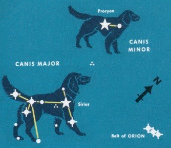

These are all the tweets and replies that @RadishHarmers made on 2020-12-6:
Id:
1335375305549230080
Timestamp:
2020-12-6 at 0:7:37
Id:
1335381152966844417
Timestamp:
2020-12-6 at 0:30:51
Id:
1335383150034382849
Timestamp:
2020-12-6 at 0:38:47
In reply to user:
@marx_knopfler
In reply to tweet ID:
1335375587280564224
Id:
1335391433868660737
Timestamp:
2020-12-6 at 1:11:42
In reply to user:
@Sturgeons_Law
In reply to tweet ID:
1335388771139796993
Id:
1335407541094932486
Timestamp:
2020-12-6 at 2:15:43
In reply to user:
@willmenaker
In reply to tweet ID:
1335403409357365248
Id:
1335410847271809025
Timestamp:
2020-12-6 at 2:28:51
In reply to user:
@BillEwanick
In reply to tweet ID:
1335408408686637056
Id:
1335419087367888896
Timestamp:
2020-12-6 at 3:1:35
Containing photo:

Id:
1335420371386986498
Timestamp:
2020-12-6 at 3:6:42
Id:
1335459589723197442
Timestamp:
2020-12-6 at 5:42:32
Id:
1335459906728714240
Timestamp:
2020-12-6 at 5:43:48
Id:
1335625886222135296
Timestamp:
2020-12-6 at 16:43:20
In reply to user:
@UkrSocialists
In reply to tweet ID:
1335463977061502977
Id:
1335657394261659648
Timestamp:
2020-12-6 at 18:48:32
Id:
1335658030164271107
Timestamp:
2020-12-6 at 18:51:4
Id:
1335658317658660867
Timestamp:
2020-12-6 at 18:52:12
In reply to user:
@camerobradford
In reply to tweet ID:
1335658170988032000
Id:
1335727857532854272
Timestamp:
2020-12-6 at 23:28:32
In reply to user:
@neoliberal_dad
In reply to tweet ID:
1335727214487359493